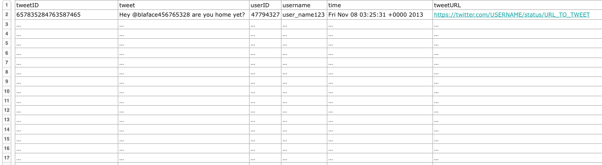

NOTE: MICROFILTERS IS CURRENTLY UNDERGOING MAINTENANCE AND IS THEREFORE CURRENTLY NOT AVAILABLE
What it is
MicroFilters is an image extracting tool used in the Disaster Management App set of MicroMappers. MicroMappers is an effort to create Crisis Maps for Disasters based on images that emerge from social media. MicroFilters is one of the layers of this application. Given a text file of specifically formatted tweets (see Installation and Usage for more detail), MicroFilters extracts all images from this text given a set of user-chosen parameters. The images go through filters (though very lenient at the moment) to remove images that are 100% not depicting disasters. These images are then passed on to the "Clickers", from which people tag the images extracted from the tweets. Lastly, all this information is used to create a crisis map, helping humanitarians to locate where help is needed.
The Team
MicroFilters is part of MicroMappers, whose team includes Patrick Meier, Ji Lucas, Luis Daniel, Ariba Jahan, Christine Jackson, and Daniel Lombraña González, in partnership with United Nations (OCHA). MicroFilters is developed by Andrew Ilyas in Waterloo, Ontario as a part of a project for Automatic Classification of Tweets through Machine Learning.
Installation:
To install MicroFilters:
- Formatting Instructions:
- Input Format: The data should be in a csv file, chosen through the file chooser. The first row of the csv specifies the format, which should be any ordering of [username, tweet, time, userId, location, latitude, longtitude, time] (spelled exactly that way). The 'Time' component, if present, must be formatted as: Day(word or abbreviation -- Fri, Sat, etc.) Month(word or abbreviation) Day(#) HH:MM:SS. See the image above for an example input

-
Output Format: The output will be a text file with the following tab-separated columns: [username, tweet, time, userId, location, latitude, longtitude, time]
- Click all applicable Check-boxes:
- Remove Retweets: This, when checked, removes retweets (Any tweet with RT before the message)
- Remove Duplicates: This, when checked, removes duplicate tweets (Tweets with the same message)
- Include Images: This option comes with 3 other checkboxes; small, medium, and large. If this is not selected, nothing will be outputted. Only leave this unchecked if all you want to do is edit the source file through other options. The three sub-checkboxes are the sizes that you wish to include.
- Include Video Ids: This option, when selected, will allow video ids to be added with image urls under the 'Image URLs' Field. See the Input and Output Format section. Note that this only works with YouTube videos at the moment.
- Include only English Tweets: This will filter out all non-English tweets. Note that this slows down processing time.
- Sort Chronologically: This will sort the output file by time of tweet
© Andrew Ilyas